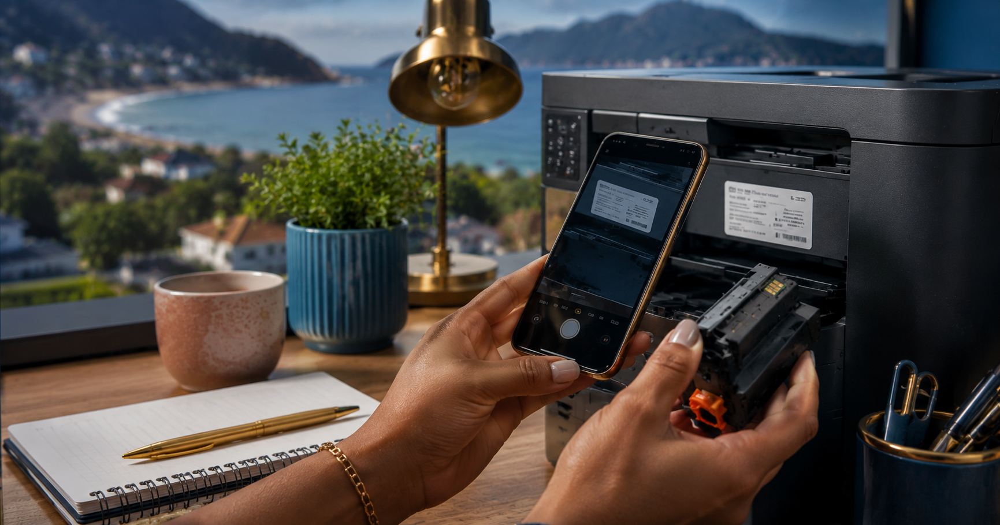

Fish Hoek · The Valley
Ink cartridges, refills and toner in Fish Hoek.
Trusted, convenient supply for local offices, shops, small businesses and home printers. Send Linda and Brendan a photo of your cartridge or your printer model.
What Gold Wanted does
Two clear reasons to visit.
We sell ink cartridges, refills and toner to people and businesses nearby. We also buy gold and silver jewellery for quick cash.
For homes and businesses
Ink cartridges, refills & toner
For offices, shops, small businesses and home printers. Send a cartridge photo or printer model and ask us to check availability.
Ask about ink or toner →Quick cash for jewellery
Sell gold & silver jewellery
Gold Wanted buys gold and silver jewellery for quick cash. Selected household sterling pieces can also be brought in for assessment.
Sell jewellery for quick cash →Ink, refill or toner
Send the cartridge label or printer model.
It is the fastest way to ask about the right item and current availability.
- 01Take a clear photo of the cartridge label.
- 02Send it to Linda on WhatsApp with your printer make and model.
- 03Ask about availability, collection or the next best option.
Built for people nearby
Ink, toner and refills for local businesses.
Gold Wanted is at Triangle Square, behind Shoprite, near the main road. Local offices and shops do not need to drive north for every ink or toner enquiry.
View ink, toner & refillsThe local team
Linda and Brendan are your Gold Wanted team.
Message first, then deal with the same local people at the counter in Fish Hoek. Bring a cartridge, send a printer model, or ask before bringing in gold or silver jewellery.
Find the shopThe Local Print Desk
Ink, toner and cartridge information.
Useful visual guides for local businesses and home printers. Start with a clear photo of the printer or cartridge label.
Start here
Check locally before you drive for ink or toner.
Send a cartridge or printer photo and ask us to check availability.
Read the guide →
Printer basics
Identify the right cartridge or toner.
A clear photo gives the best place to start.
Read the guide →Small business
Keep the business printer ready.
Keep the printer model and cartridge code close.
Read the guide →Contact Gold Wanted
Send the details before you travel.
For ink, toner and refills, include a clear photo of the cartridge or printer model. For jewellery, tell Linda generally what you would like to discuss.